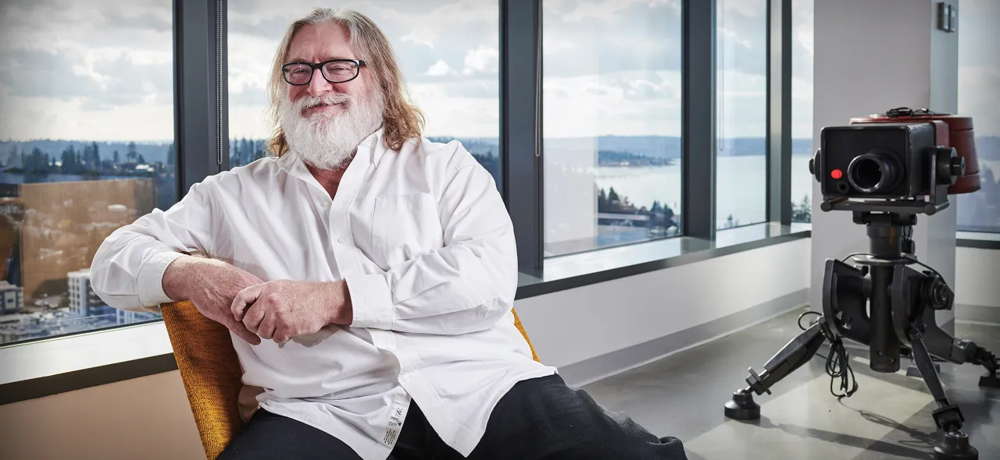

Биография
Родился 3 ноября 1962 года в штате Колорадо. После отчисления из Гарвардского Университета Ньюэлл проработал 13 лет в Microsoft, став в конечном счёте миллионером. Ньюэлл сам себя называет «продюсером первых трёх выпусков Windows». Вдохновлённые результатами работ Майкла Абраша, который ранее покинул корпорацию Microsoft для создания компьютерной игры Quake от id Software, Ньюэлл с другим работником Microsoft — Майком Харрингтоном — также покинули Microsoft и создали студию Valve в 1996 году. Ньюэлл вместе с Харрингтоном использовали свой личный капитал для финансирования Valve и последующей разработки игры Half-Life. В этих целях был куплен исходный код движка Quake engine, который в дальнейшем был сильно переработан. В 1998 году в свет вышла серия игр Half-Life, ставшая основой для таких популярных игр и модификаций, как Counter-Strike и Team Fortress Classic. Вскоре после выхода Half-Life компания принялась за разработку второй части игры. В 2000 году Харрингтон покинул компанию, после чего Ньюэлл выкупил его долю[5]. По приблизительным оценкам различных источников, к 2011 году стоимость Valve Corporation составляла от 2 до 4 млрд долларов[5][6]. По словам самого Ньюэлла, компания чрезвычайно прибыльна — в пересчёте на сотрудника прибыльнее, чем Google и Apple[5]. В начале 2011 года штат компании насчитывал 250 человек[5], к концу 2012 он вырос до 400 служащих[6], при этом около половины сотрудников компании — бывшие создатели модификаций к играм[5]. В 2007 году Ньюэлл открыто выразил своё недовольство различными ограничениями игровых консолей, с которыми сталкиваются разработчики игр. В частности, он негативно отметил политику Sony по отношению к системе PlayStation 3[7]. В декабре 2010 года журнал Forbes включил Гейба Ньюэлла в свой список людей, которые в 2011 году окажут существенное влияние в сфере своего бизнеса. Ньюэлл был включён в список главным образом за работу его компании над сервисом цифровой дистрибуции Steam, а также за партнёрские отношения с некоторыми крупными разработчиками компьютерных игр[8]. В 2012 году Ньюэлл вошёл в список самых богатых людей мира по версии журнала Forbes, заняв 854 место в мире и 303 место в США. По оценкам экспертов, его заработок в это время составлял 1,5 миллиарда долларов[9].